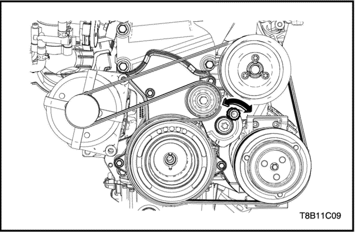

SECCIÓN
MANTENIMIENTO Y REPARACIÓN
SERVICIO EN VEHÍCULO


Alternador - 1.2 DOHC - B12D
Procedimiento de desmontaje
- Desconecte el cable negativo de la batería.
- Eleve el vehículo.
- Desmonte la correa de accesorios. Consulte la Sección 1C1, Correa de accesorios.
- Desenchufe el conector del cableado.
- Quite la tuerca del conector del cableado de la batería para desenchufar el conector positivo de la batería.
- Desenchufe el conector del cableado del alternador.
- Extraiga los tornillos/tuercas de retención del alternador.
- Desmonte el alternador.
procedimiento de montaje
- Monte el alternador.
- Instale el tornillo/tuerca de retención del alternador.
- Coloque la tuerca del conector del cableado de la batería para enchufar el conector positivo de la batería.
Apretar
Apriete el tornillo/tuerca de retención del alternador hasta 25 N•m (18,4 lb-pie).
- Enchufe el conector del cableado.
- Monte la correa de accesorios. Consulte la Sección 1C1, Correa de accesorios.
- Baje el vehículo.
- Conecte el cable negativo de la batería.

Alternador - 1.4 DOHC - G14D
Procedimiento de desmontaje
- Desconecte el cable negativo de la batería.
- Eleve el vehículo.
- Desmonte la correa de accesorios. Consulte la Sección 1C2, Correa de accesorios.
- Desenchufe el conector del cableado.
- Quite la tuerca del conector del cableado de la batería para desenchufar el conector positivo de la batería.
- Desenchufe el conector del cableado del alternador.
- Extraiga los tornillos de retención del alternador.
- Desmonte el alternador.
procedimiento de montaje
- Monte el alternador.
- Coloque los tornillos de retención del alternador.
Apretar
Apriete el tornillo de retención del alternador hasta 35 N•m (25,8 lb-pie).
- Coloque la tuerca del conector del cableado de la batería para enchufar el conector positivo de la batería.
- Enchufe el conector del cableado.
- Monte la correa de accesorios. Consulte la Sección 1C2, Correa de accesorios.
- Baje el vehículo.
- Conecte el cable negativo de la batería.
Motor de arranque - 1.2 DOHC - B12D
Procedimiento de desmontaje
- Desconecte el cable negativo de la batería.
- Eleve el vehículo.
- Quite la tuerca del solenoide del motor de arranque para desconectar el cableado del motor de arranque.
- Quite la tuerca del solenoide del motor de arranque para desenchufar el conector positivo de la batería.
- Extraiga el tornillo de masa del bloque del motor.
- Extraiga los tornillos de espárrago del motor de arranque.
- Desmonte el motor de arranque.
procedimiento de montaje
- Monte el motor de arranque.
- Coloque los tornillos de espárrago del motor de arranque.
Apretar
Apriete el tornillo de fijación del motor de arranque hasta 23 N•m (16,9 lb-pie).
- Coloque el tornillo de masa del bloque del motor.
- Coloque la tuerca del solenoide del motor de arranque para enchufar el conector positivo de la batería.
- Coloque la tuerca del solenoide del motor de arranque para conectar el cableado del motor de arranque.
Apretar
- Apriete el tornillo de masa del motor de arranque hasta 38 N•m (28,0 lb-pie).
- Apriete la tuerca del conector del cableado del solenoide del motor de arranque hasta 10,5 N•m (7,7 lb-pie).
- Apriete la tuerca del conector positivo de la batería del solenoide del motor de arranque hasta 10,5 N•m (7,7 lb-pie).
- Baje el vehículo.
- Conecte el cable negativo de la batería.
Motor de arranque - 1.4 DOHC - G14D
Procedimiento de desmontaje
- Desconecte el cable negativo de la batería.
- Eleve el vehículo.
- Quite la tuerca del solenoide del motor de arranque para desconectar el cableado del motor de arranque.
- Quite la tuerca del solenoide del motor de arranque para desenchufar el conector positivo de la batería.
- Extraiga el tornillo de masa del bloque del motor.
- Quite los tornillos de fijación del motor de arranque.
- Desmonte el motor de arranque.
procedimiento de montaje
- Monte el motor de arranque.
- Coloque los tornillos de fijación del motor de arranque.
Apretar
Apriete el tornillo de fijación del motor de arranque hasta 25 N•m (18,4 lb-pie).
- Coloque el tornillo de masa del bloque del motor.
- Coloque la tuerca del solenoide del motor de arranque para enchufar el conector positivo de la batería.
- Coloque la tuerca del solenoide del motor de arranque para conectar el cableado del motor de arranque.
Apretar
- Apriete el tornillo de masa del motor de arranque hasta 38 N•m (28,0 lb-pie).
- Apriete la tuerca del conector del cableado del solenoide del motor de arranque hasta 10,5 N•m (7,7 lb-pie).
- Apriete la tuerca del conector positivo de la batería del solenoide del motor de arranque hasta 10,5 N•m (7,7 lb-pie).
- Baje el vehículo.
- Conecte el cable negativo de la batería.
Batería/bandeja portabatería
Procedimiento de desmontaje
- Desconecte el cable negativo de la batería y, luego, desconecte su cable positivo.
- Quite las tuercas de las varillas de la batería que sujetan la mordaza de la barra de retención de la batería.
- Compruebe si la bandeja portabatería presenta signos claros de daños o grietas. Si fuera necesario, quite los tornillos inferiores y superiores para separar la bandeja portabatería.
procedimiento de montaje
- Monte la bandeja portabatería apretando sus tornillos superiores e inferiores.
Apretar
Apriete los tornillos inferiores y superiores de la bandeja portabatería hasta 20 N•m (15 lb-pie).
- Monte la batería en la bandeja portabatería.
- Sujete la mordaza de barra a la batería acoplando sin apretar las varillas de la batería desde los recortes de la bandeja portabatería por los orificios de la mordaza de barra y apretando un poco las tuercas.
Apretar
Apriete las tuercas de la mordaza de retención a las varillas de la batería hasta 4 N•m (35 lb-pulg.).
- Conecte los cables negativos de la batería.
Apretar
Apriete las tuercas de los cables de la batería hasta 4,5 N•m (40 lb-pulg.).
REPARACIÓN DE LA UNIDAD
Alternador - 1,2L DOHC/KDAC
procedimiento de desmontaje (desarmado, desensamble, desensamblaje)
- Desmonte el alternador. Consulte el apartado "Alternador" de esta sección.
- Extraiga la tuerca de retención de la tapa trasera del alternador.
- Desmonte la tapa trasera del alternador.
- Extraiga la tuerca de retención de la polea del generador.
- Desmonte la polea del alternador.
- Desmonte el casquillo de la polea del alternador.
- Quite el tornillo pasante (4 EA).
- Desconecte la tapa delantera del alternador.
Precaución: No fuerce para mover el rotor del alternador, ya que dicho rotor está presionado con el cojinete. Utilice un martillo de goma para la extracción.
Aviso: El conjunto de la tapa trasera del alternador consta de la escobilla, el rectificador, el regulador y el estátor, formando todos ellos un conjunto.
- Desmonte el casquillo del rotor del alternador.
- Extraiga el ventilador del rotor del alternador.
- Desmonte el rotor del alternador del conjunto de la tapa trasera del alternador.
Inspección / Medición
Precaución: El medidor digital utiliza los valores estándar para todas las pruebas.
- Inspeccione el conjunto del rotor.
- Compruebe si hay un circuito abierto en el rotor. Sustituya el rotor si fuera necesario.
-
- 2) Compruebe si hay un circuito abierto entre los anillos colectores. Sustituya el rotor si fuera necesario.
- 3) Compruebe si hay un circuito abierto o derivación a masa en la bobina del rotor, el anillo colector y el núcleo. Sustitúyalos si fuera necesario.
- Inspección de las escobillas.
- Compruebe el estado de las escobillas. Si la escobilla está rota o presenta desgaste, sustituya el conjunto de la tapa trasera del alternador.
- Abra la tapa de las escobillas y compruebe si hay alguna rotura. Si hay alguna rotura, sustituya el conjunto de la tapa trasera del alternador.
- Compruebe los triodos (-).
- Ajuste el medidor digital para la medición de la tensión de los diodos.
- Enchufe el conector positivo del medidor digital a la tapa.
- Enchufe el conector negativo del medidor digital al diodo negativo y compruebe si hay un circuito abierto o derivación a masa.
- Si la espec. medida se encuentra por debajo de 200~600mV, sustituya el conjunto de la tapa trasera del alternador.
- Compruebe los triodos (+).
- Ajuste el medidor digital para la medición de la tensión de los diodos.
- Enchufe el conector negativo del medidor digital a la tapa.
- Enchufe el conector positivo del medidor digital al diodo positivo y compruebe si hay un circuito abierto o derivación a masa.
- Si la espec. medida se encuentra por debajo de 200~600mV, sustituya el conjunto de la tapa trasera del alternador.
Procedimiento de montaje (armado, ensamblaje)
- Monte el rotor del alternador en el conjunto de la tapa trasera del alternador.
- Monte el ventilador del rotor del alternador.
- Monte el casquillo del rotor del generador.
- Coloque la tapa delantera del alternador.
- Coloque los tornillos pasantes (4 EA).
Apretar
Apriete el tornillo pasante del alternador (T4) hasta 4,75 N•m (3,5 lb-pie).
- Coloque el casquillo de la polea del alternador.
- Monte la polea del alternador.
- Coloque la tuerca de retención de la polea del generador.
Apretar
Apriete la tuerca de retención de la polea del alternador hasta 95 N•m (70 lb-pie).
- Monte la tapa trasera del alternador.
- Coloque la tuerca de retención de la tapa trasera del alternador.
Apretar
Apriete la tuerca de retención de la tapa trasera del generador hasta 16,5 N•m (12,1 lb-pie).
- Monte el alternador.
Alternador - 1,4L DOHC/KDAC
procedimiento de desmontaje (desarmado, desensamble, desensamblaje)
- Desmonte el alternador. Consulte el apartado "Alternador" de esta sección.
- Extraiga la tuerca de retención de la tapa trasera del alternador.
- Desmonte la tapa trasera del alternador.
- Extraiga la tuerca de retención de la polea del generador.
- Desmonte la polea del alternador.
- Desmonte el casquillo de la polea del alternador.
- Quite el tornillo pasante (4 EA).
- Desconecte la tapa delantera del alternador.
Precaución: No fuerce para mover el rotor del alternador, ya que dicho rotor está presionado con el cojinete. Utilice un martillo de goma para la extracción.
Aviso: El conjunto de la tapa trasera del alternador consta de la escobilla, el rectificador, el regulador y el estátor, formando todos ellos un conjunto.
- Desmonte el casquillo del rotor del alternador.
- Extraiga el ventilador del rotor del alternador.
- Desmonte el rotor del alternador del conjunto de la tapa trasera del alternador.
Inspección / Medición
Precaución: El medidor digital utiliza los valores estándar para todas las pruebas.
- Inspeccione el conjunto del rotor.
- Compruebe si hay un circuito abierto en el rotor. Sustituya el rotor si fuera necesario.
-
- 2) Compruebe si hay un circuito abierto entre los anillos colectores. Sustituya el rotor si fuera necesario.
- 3) Compruebe si hay un circuito abierto o derivación a masa en la bobina del rotor, el anillo colector y el núcleo. Sustitúyalos si fuera necesario.
- Inspección de las escobillas.
- Compruebe el estado de las escobillas. Si la escobilla está rota o presenta desgaste, sustituya el conjunto de la tapa trasera del alternador.
- Abra la tapa de las escobillas y compruebe si hay alguna rotura. Si hay alguna rotura, sustituya el conjunto de la tapa trasera del alternador.
- Compruebe los triodos (-).
- Ajuste el medidor digital para la medición de la tensión de los diodos.
- Enchufe el conector positivo del medidor digital a la tapa.
- Enchufe el conector negativo del medidor digital al diodo negativo y compruebe si hay un circuito abierto o derivación a masa.
- Si la espec. medida se encuentra por debajo de 200~600mV, sustituya el conjunto de la tapa trasera del alternador.
- Compruebe los triodos (+).
- Ajuste el medidor digital para la medición de la tensión de los diodos.
- Enchufe el conector negativo del medidor digital a la tapa.
- Enchufe el conector positivo del medidor digital al diodo positivo y compruebe si hay un circuito abierto o derivación a masa.
- Si la espec. medida se encuentra por debajo de 200~600mV, sustituya el conjunto de la tapa trasera del alternador.
Procedimiento de montaje (armado, ensamblaje)
- Monte el rotor del alternador en el conjunto de la tapa trasera del alternador.
- Monte el ventilador del rotor del alternador.
- Monte el casquillo del rotor del generador.
- Coloque la tapa delantera del alternador.
- Coloque los tornillos pasantes (4 EA).
Apretar
Apriete el tornillo pasante del alternador (G14D) hasta 4,75 N•m (3,5 lb-pie).
- Coloque el casquillo de la polea del alternador.
- Monte la polea del alternador.
- Coloque la tuerca de retención de la polea del generador.
Apretar
Apriete la tuerca de retención de la polea del alternador hasta 95 N•m (70 lb-pie).
- Monte la tapa trasera del alternador.
- Coloque la tuerca de retención de la tapa trasera del alternador.
Apretar
Apriete la tuerca de retención de la tapa trasera del generador hasta 18,5 N•m (13,6 lb-pie).
- Monte el alternador.
DESCRIPCIÓN GENERAL Y FUNCIONAMIENTO DEL SISTEMA
Batería
La batería desempeña tres funciones principales en el sistema eléctrico. Primero, proporciona la fuente de energía para arrancar el motor. Segundo, actúa como estabilizador de tensión en el sistema eléctrico. Finalmente, puede suministrar, durante un tiempo limitado, energía suficiente cuando la demanda eléctrica supera a la capacidad del alternador.
La batería estanca es un elemento estándar en todos los coches. Carece de tapones de ventilación en la tapa. Va completamente sellada, excepto por dos pequeños taladros de ventilación en los laterales. Estos taladros permiten la salida de pequeñas cantidades de gas que se producen en el interior de la batería.
La batería sellada presenta las siguientes ventajas con respecto a las convencionales:
- No es necesario añadir agua en toda su vida útil.
- Está protegida contra los excesos de carga. Si se aplica una tensión excesiva a la batería, ésta no aceptará tanta cantidad de corriente como una batería convencional. En una de estas últimas, el exceso de tensión tratará todavía de seguir cargando a la batería, dando lugar a gases que provocan la pérdida de líquido.
- No es tan propensa a descargarse por sí sola como la batería convencional. Esto resulta particularmente importante cuando se deja la batería sin funcionar durante periodos de tiempo prolongados.
- Dispone de mayor potencia y su caja es más pequeña y más ligera.
Valores de potencia de régimen
La batería dispone de dos capacidades nominales: (1) Una capacidad nominal de reserva especificada a 27°C (80°F), que es el momento en que una batería completamente cargada proporcionará una corriente de 25 amperios igual o superior a 10,5 voltios; (2) un amperaje de arranque en frío nominal estipulado en pruebas a -18°C (0°F), que indica la capacidad de carga de arranque.
Capacidad de reserva
La capacidad de reserva es el periodo de tiempo máximo en el que se puede viajar de noche con una carga eléctrica mínima y sin potencia del alternador. Expresada en minutos, la capacidad de reserva (o régimen RC) es el tiempo que se necesita para cargar totalmente una batería a una temperatura de 27°C (81°F) y que está siendo descargada a una corriente de 25 amperios, hasta alcanzar una tensión final de 10,5 voltios.
Amperaje del arranque en frío por medio de manivela
La prueba de amperaje de arranque en frío se expresa para una temperatura de la batería de -18°C (0°F). La capacidad nominal de la corriente es el amperaje mínimo que se debe mantener en la batería durante 30 seg. y a la temperatura especificada, con unos requisitos mínimos de tensión de 7,2 voltios. Este valor nominal es la medida de la capacidad de arranque en frío.
La batería no está diseñada para durar indefinidamente. Sin embargo, con los cuidados apropiados, la batería puede proporcionar servicio durante muchos años.
Si los resultados de las comprobaciones son buenos, pero no se comporta satisfactoriamente en servicio, sin ninguna razón aparente, los factores que se enumeran a continuación pueden señalar las causas de la avería:
- Los accesorios del vehículo se quedan encendidos toda la noche.
- Se emplean velocidades medias de conducción lentas por períodos cortos de tiempo.
- La carga eléctrica del vehículo es superior a la capacidad del alternador, particularmente con la adición de un equipo adquirido después de la compra del coche.
- Defectos en el sistema de carga, tales como cortocircuitos, correa del alternador que patina, un alternador o un regulador de tensión defectuosos.
- Abuso de la batería, incluyendo la falta de mantenimiento de los terminales de los cables limpios y apretados o una abrazadera de retención de la batería floja.
- Problemas mecánicos en el sistema eléctrico, tales como cables en cortocircuito o con el aislamiento roto.
Hidrómetro incorporado
Esta batería estanca dispone de un hidrómetro incorporado de temperatura compensada situado en la parte superior de la misma. Este hidrómetro se utiliza en los procedimientos de diagnóstico siguientes:
- Cuando observe el hidrómetro, asegúrese de que la parte superior de la batería esté limpia.
- En condiciones de funcionamiento normales, se pueden observar dos indicaciones:
- PUNTO VERDE VISIBLE: cualquier aspecto verde se interpreta como "punto verde", lo que quiere decir que la batería está lista para su comprobación.
- PUNTO VERDE OSCURO NO VISIBLE: si existe alguna queja sobre el motor de arranque, se debe comprobar la batería. También se deben comprobar, al mismo tiempo, los sistemas eléctrico y de carga.
- Ocasionalmente, puede presentarse una tercera situación:
- Ocasionalmente, puede presentarse una tercera situación:
- Amarillo claro o brillante: esto significa que el nivel del electrólito está por debajo de la parte inferior del hidrómetro. Esto puede venir provocado por una carga prolongada o excesiva, una carcasa rota, un vuelco excesivo o un desgaste normal de la batería. Una batería en estas condiciones puede indicar que se ha producido una carga alta mediante un sistema de carga defectuoso. Por lo tanto, tal vez haya que comprobar los sistemas eléctrico y de carga si se produce una reclamación relacionada con el motor de arranque. Si dicha queja viene motivada por la batería, proceda a su sustitución.
Procedimiento de carga
- Las baterías que muestran un punto verde no necesitan ser cargadas, a menos que acaben de descargarse, tal como ocurre en el arranque de un vehículo.
- Cuando cargue una batería de terminales sellados fuera del vehículo, monte el kit adaptador. Asegúrese de que todas las conexiones del cargador estén limpias y apretadas. Para obtener los mejores resultados, las baterías deben cargarse mientras el electrólito y las placas estén a temperatura ambiente. Una batería que esté extremadamente fría puede no aceptar la corriente durante varias horas después de haber puesto en marcha el cargador.
- Cargue la batería hasta que aparezca el punto verde. Durante la carga, debe comprobarse la batería cada media hora. Tal vez haya que volcar o agitar la batería para que aparezca el punto verde.
- Después de la carga, debe realizarse una prueba en carga de la batería. Consulte el apartado "Motor de arranque" de esta sección.
Tiempo de carga necesario
El tiempo necesario para cargar la batería variará en función de los factores siguientes:
-
Tamaño de la batería - una batería grande de alta capacidad, completamente descargada, necesita más del doble de tiempo para recargarse que una batería pequeña completamente descargada de un utilitario.
-
Temperatura - Se necesitará más tiempo para cargar cualquier batería a -18°C (0°F) que a 27°C (81°F). Cuando se conecta un cargador rápido a una batería fría, la corriente aceptada por la batería será muy baja en un principio. La batería aceptará una tasa de corriente mayor a medida que se caliente.
-
Capacidad del cargador - Un cargador que pueda suministrar sólo 5 amperios requerirá un tiempo de carga mucho mayor que otro que pueda suministrar 30 amperios o más.
-
Estado de la carga - Una batería totalmente descargada requiere más del doble de carga que una batería cargada a la mitad. Puesto que el electrolito es agua casi pura y es un mal conductor en una batería totalmente descargada, la corriente aceptada por la batería será muy baja al principio. Posteriormente, a medida que la carga de corriente provoque un aumento del contenido de ácido electrolito, la corriente de carga aumentará.
Cargar una batería totalmente descargada (no conectada al vehículo)
A menos que se siga este procedimiento debidamente, puede que se sustituya innecesariamente una batería en perfecto estado.
Para recargar una batería completamente descargada, se debe utilizar el procedimiento siguiente:
- Mida la tensión en los bornes de la batería con un voltímetro de precisión. Si la lectura es inferior a 10 voltios, la corriente de carga será muy baja y puede tardar algún tiempo hasta que la batería acepte la corriente por encima de unos miliamperios. Consulte el apartado "Tiempo de carga necesario" de esta sección, que se centra en los factores que afectan tanto al tiempo de carga necesario como a las estimaciones aproximadas de la tabla que aparece a continuación. Es posible que los amperímetros disponibles en este campo no puedan detectar estas corrientes tan bajas.
- Coloque el cargador de la batería en su ajuste alto.
Importante: Algunos cargadores se caracterizan por disponer de circuitos de protección de la polaridad, lo que impide la carga a menos que los cables del cargador estén conectados correctamente a los terminales de la batería. Una batería totalmente descargada puede no tener la tensión suficiente para activar este circuito, aun cuando los cables estén conectados debidamente, haciendo que parezca que la batería no acepta la corriente de carga. Por lo tanto, siga las instrucciones específicas del fabricante del cargador para desviar o invalidar dicho circuito, de forma que el cargador pueda conectarse y cargar la batería con la tensión muy baja.
- Los cargadores de baterías varían en cuanto a la cantidad de corriente y tensión que suministran. El tiempo necesario para que una batería acepte una corriente medible del cargador, a distintas tensiones, puede ser el siguiente:
- Los cargadores de baterías varían en cuanto a la cantidad de corriente y tensión que suministran. El tiempo necesario para que una batería acepte una corriente medible del cargador, a distintas tensiones, puede ser el siguiente:
|
Tensión
|
Horas
|
|
16,0 ó más
|
Hasta 4 horas
|
|
14,0-15,9
|
Hasta 8 horas
|
|
13,9 ó menos
|
Hasta 16 horas
|
- Si la corriente de carga no es medible, al final de los tiempos de carga mencionados anteriormente, se debe sustituir la batería.
- Si la corriente de carga se puede medir durante el tiempo de carga, la batería está buena, pudiendo completarse la carga de la forma normal.
Importante: Resulta importante recordar que una batería completamente descargada debe recargarse a una cantidad suficiente de amperios hora (AH) para devolverla a un estado de utilización. Por regla general, el empleo de la capacidad nominal de reserva (RC) como cantidad de amperios hora de la carga, suele acarrear la aparición del punto verde.
- Si la corriente de carga no resulta medible todavía, después de emplear el tiempo de carga calculado según el método anterior, la batería debe ser sustituida.
- Si la corriente de carga se puede medir durante el tiempo de carga, la batería está buena, pudiendo completarse la carga de la forma normal.
Procedimiento de arranque en frío
- Sitúe el vehículo que dispone de una batería en buen estado (cargada) de forma que los cables de puente lleguen de una batería a otra.
- Gire la llave de contacto a la posición OFF, apague todas las luces así como todos los aparatos eléctricos en ambos vehículos. Encienda las luces intermitentes de emergencia si va a realizar el arranque con cables puente en zonas con tráfico. Además, encienda las luces que sean necesarias para la zona de trabajo.
- Aplique con firmeza el freno de estacionamiento en ambos vehículos.
Aviso: Asegúrese de que los cables no estén encima o cerca de poleas, ventiladores u otras piezas que puedan ponerse en movimiento cuando se ponga en marcha el motor.
- Coloque la palanca de cambios automática en PARK (estacionamiento), o en punto muerto, en el caso de una caja de cambios manual.
- Coloque la palanca de cambios automática en PARK (estacionamiento), o en punto muerto, en el caso de una caja de cambios manual.
Precaución: Con el fin de evitar lesiones, no utilice cables sin un aislamiento adecuado.
- Conecte un extremo del primer cable de puente al terminal positivo de la batería. Asegúrese de que no haga contacto con ninguna otra pieza metálica. Sujete el otro extremo del mismo cable al terminal positivo de la otra batería. No conecte nunca este extremo al terminal negativo de la batería descargada.
- Conecte un extremo del primer cable de puente al terminal positivo de la batería. Asegúrese de que no haga contacto con ninguna otra pieza metálica. Sujete el otro extremo del mismo cable al terminal positivo de la otra batería. No conecte nunca este extremo al terminal negativo de la batería descargada.
Precaución: No conecte el cable directamente al terminal negativo de la batería descargada. El hacerlo así podría provocar chispas y la posible explosión de la batería.
- Conecte un extremo del segundo cable de puente al terminal negativo de la batería auxiliar. Efectúe la conexión final a una masa sólida del motor, como por ejemplo, el soporte de elevación del mismo, al menos a 450 mm (18 pulgadas) de distancia de la batería descargada.
- Conecte un extremo del segundo cable de puente al terminal negativo de la batería auxiliar. Efectúe la conexión final a una masa sólida del motor, como por ejemplo, el soporte de elevación del mismo, al menos a 450 mm (18 pulgadas) de distancia de la batería descargada.
- Ponga en marcha el motor del vehículo con la batería en perfectas condiciones. Deje que gire el motor a una velocidad moderada durante unos minutos. A continuación, ponga en marcha el motor del vehículo con la batería descargada.
- Retire los cables de puente siguiendo el proceso anterior en orden inverso. Primero desconecte el cable negativo del vehículo que tenía la batería descargada. Mientras se efectúan las desconexiones, tenga cuidado de que este cable no haga contacto con ninguna pieza metálica mientras el otro extremo siga conectado.
Generador
El sistema de carga KDAC cuenta con varios modelos disponibles, incluyendo el Ø114D (Valeo Mando) o el CS121D. El número indica el diámetro exterior en milímetros de la laminación del estátor.
Los alternadores CS disponen de reguladores internos. La conexión Y (Valeo Mando) o estator en triángulo (KDAC), un puente rectificador y un rotor con un anillo colector y escobillas son eléctricamente similares a los de los alternadores antiguos. Utilizan, asimismo, una polea y un ventilador convencionales. No existe orificio de comprobación.
A diferencia de los alternadores de tres hilos, el Ø114D (Valeo Mando) o CS121D (KDAC) se pueden usar con tan solo dos conexiones: el positivo de la batería y un terminal "L" conectado a la luz indicadora de carga.
Al igual que con otros sistemas de carga, las luces indicadoras de carga se encienden cuando se gira la llave de contacto a la posición ON y se apagan cuando el motor está en marcha. Si permanece encendida con el motor funcionando, es que hay alguna avería en el sistema de carga.
El ajuste de la tensión del regulador varía con la temperatura y limita la tensión del sistema mediante el control de la corriente inductora del rotor. El regulador enciende y apaga la corriente inductora del rotor. Variando el tiempo de conexión-desconexión se consigue la intensidad de corriente de campo media adecuada para controlar la tensión del sistema apropiado. A velocidades altas, el tiempo de conexión puede ser del 10 por ciento y el tiempo de desconexión del 90 por ciento. A velocidades bajas, con cargas eléctricas altas, el tiempo de trabajo puede ser del 90 por ciento y el tiempo de reposo del 10 por ciento.
El regulador monofásico que tiene 2~3 patillas en el terminal puede utilizarse para el alternador. El regulador mantiene la tensión del sistema controlando la conexión-desconexión de la corriente inductora sin frecuencia fijada normalmente.
Sistema de carga
El sistema de carga KDAC cuenta con varios modelos disponibles, incluyendo el Ø114D (Valeo Mando) o el CS121D. El número indica el diámetro exterior en milímetros de las laminaciones del estátor.
Los alternadores CS utilizan un tipo nuevo de regulador que incorpora un triodo. La conexión Y (Valeo Mando) o estator en triángulo KDAC, un puente rectificador y un rotor con un anillo colector y escobillas son eléctricamente similares a los de los alternadores antiguos. Utilizan, asimismo, una polea y un ventilador convencionales. No existe orificio de comprobación.
Motor de arranque
Los motores de arranque del inductor bobinado disponen de masas polares, dispuestas alrededor del inducido, que se excitan mediante bobinas inductoras bobinadas.
Los motores de arranque con palanca de inversión encapsulada tienen el mecanismo de la palanca de inversión y el pistón del solenoide encapsulados en la carcasa del accionamiento, para protegerlos de la suciedad, el hielo y las salpicaduras.
En el circuito básico, los bobinados del solenoide se excitan cuando se cierra el interruptor. El desplazamiento resultante de la palanca de inversión y del pistón provocan el acoplamiento del piñón con la corona del volante motor. Los contactos principales del solenoide se cierran. Entonces se produce el arranque.
Cuando arranca el motor, la invalidación del piñón protege al inducido de una velocidad excesiva hasta que se abre el interruptor, momento en el cual el muelle de retorno provoca el desacoplamiento del piñón. Para evitar una invalidación excesiva, el interruptor debe liberarse inmediatamente una vez arrancado el motor.
Sistema de arranque
El sistema eléctrico del motor incluye la batería, el encendido, el motor de arranque, el alternador y todos los cables relacionados. Las tablas de diagnóstico contribuirán a la detección de las averías del sistema. Cuando realice el seguimiento de una avería hasta un componente determinado, consulte el manual de servicio en la sección correspondiente a dicho componente.
El circuito del sistema de arranque consta de la batería, el motor de arranque, el interruptor de contacto y todos los cableados eléctricos relacionados. Todos estos componentes están conectados eléctricamente.